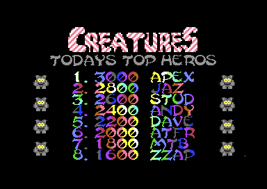
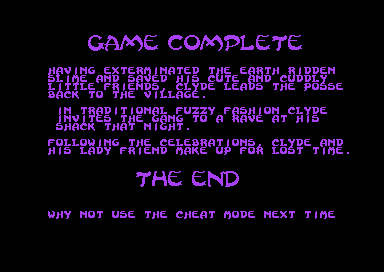
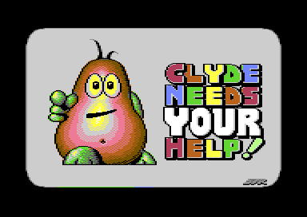

<meta charset="utf-8">
<meta name="viewport" content="width=device-width, initial-scale=1">
<title>Creatures</title>
<link rel="preconnect" href="https://fonts.googleapis.com">
<link rel="stylesheet" href="https://fonts.googleapis.com/css2?family=Lato:wght@400;700;900&family=IBM+Plex+Mono:wght@400;500&display=swap">
<style>
:root{
  --bg:#23262d; --paper:#e9e7e1; --surface:#ffffff; --surface-2:#f1efea; --line:#d5d3cc; --line-soft:#e0ded8;
  --ink:#2f3136; --ink-soft:#55585f; --ink-mute:#80838a;
  --link:#1f5fa8; --link-hover:#154480; --accent:#1f5fa8;
  --amber:#c25a00; --cyan:#1f5fa8; --coral:#d04a3a; --green:#2a8a4a; --violet:#4a5bd6; --hl:#fff0c2;
  --chip:#2f3136; --chip-ink:#ffffff;
  --c64blue:#40318d; --c64grey:#686868;
  --fd:'Lato',system-ui,sans-serif; --fb:'Lato',system-ui,sans-serif; --fm:'IBM Plex Mono',ui-monospace,Menlo,monospace;
  --col:1080px; --gx:68px; --fs:17px; --lh:1.6; --hw:900; --h1:46px; --h2:26px; --sy:48px; --pp:26px; --r:10px;
  --plate-shadow:0 1px 2px rgba(0,0,0,.05),0 4px 14px rgba(0,0,0,.05);
}
*{box-sizing:border-box}
html{background:var(--bg);min-height:100%}
body{background:var(--paper);color:var(--ink);font-family:var(--fb);font-size:var(--fs);line-height:var(--lh);max-width:var(--col);margin:0 auto;min-height:100vh;padding:0 0 4rem}
h1,h2,h3{font-weight:var(--hw);letter-spacing:-.01em;text-wrap:balance;color:var(--ink);margin:0}
.wrap{padding:0 var(--gx)}
.hero{padding:48px var(--gx) 8px;text-align:left}
.eyebrow{font-family:var(--fm);font-size:12px;letter-spacing:.08em;text-transform:uppercase;color:var(--ink-mute);margin:0 0 10px}
.hero h1{font-size:var(--h1);line-height:1.15;letter-spacing:-.02em;margin:0 0 14px}
.hero .sub{margin:0 0 .6em;color:var(--ink-soft)}
section{padding:var(--sy) 0 24px}
section:last-of-type{border-bottom:none}
.fig{font-family:var(--fm);font-size:12px;letter-spacing:.08em;text-transform:uppercase;color:var(--ink-mute);margin:0 0 10px}
h2.t{font-size:var(--h2);margin-bottom:12px}
.lede{color:var(--ink-soft);margin:0 0 30px}
.plate{background:var(--surface);border:1px solid var(--line);border-radius:var(--r);padding:var(--pp);box-shadow:var(--plate-shadow)}
.cap{font-size:14px;color:var(--ink-mute);margin-top:14px;line-height:1.55}
.cap b{color:var(--ink);font-weight:700}
code{font-family:var(--fm);font-size:.82em;background:var(--chip);color:var(--chip-ink);border-radius:4px;padding:2px 6px;white-space:nowrap}
.pick{display:flex;align-items:stretch;gap:6px;margin:0 0 12px;font-family:var(--fm);font-size:12.5px}
.pick select{flex:1;min-width:0;background:var(--surface);border:1px solid var(--line);color:var(--ink);padding:6px 8px;border-radius:6px;font:inherit}
.pick .step{flex:none;display:flex;align-items:center;justify-content:center;width:30px;border:1px solid var(--line);border-radius:6px;color:var(--ink-soft);background:var(--surface);text-decoration:none;font-size:16px;line-height:1;cursor:pointer}
.pick .step:hover{color:var(--ink);border-color:var(--ink-mute);text-decoration:none}
.pick .step.off{opacity:.35;cursor:default}
.pick select:focus-visible,.pick .step:focus-visible{outline:2px solid var(--accent);outline-offset:1px}
a{color:var(--link)}
a:hover{color:var(--link-hover)}
p{margin:0 0 1em}
table{border-collapse:collapse;font-size:15px;margin:0 0 1.2em;width:100%}
th,td{text-align:left;padding:6px 10px;border-bottom:1px solid var(--line-soft);vertical-align:top}
th{font-family:var(--fm);font-size:12px;letter-spacing:.04em;text-transform:uppercase;color:var(--ink-mute);font-weight:500}
.cr-two{display:grid;grid-template-columns:1fr 1fr;gap:18px;margin:0 0 8px}
.cr-two figure,.cr-shot{margin:0}
.cr-two img,.cr-shot img{width:100%;image-rendering:pixelated;border-radius:6px;display:block}
.cr-two figcaption,.cr-shot figcaption{font-size:13px;color:var(--ink-mute);margin-top:6px}
.cr-grid{display:grid;grid-template-columns:repeat(auto-fill,minmax(118px,1fr));gap:8px;margin:0 0 16px}
.cr-cell{border:1px solid var(--line-soft);border-radius:8px;padding:8px 6px 6px;cursor:pointer;display:flex;flex-direction:column;align-items:center;gap:6px;background:var(--surface);font:inherit;color:inherit;text-align:center}
.cr-cell:hover{border-color:var(--ink-mute)}
.cr-cell.on{border-color:var(--accent);box-shadow:0 0 0 1px var(--accent)}
.cr-cell canvas{image-rendering:pixelated;border-radius:4px;max-width:100%}
.cr-cell .cr-nm{font-size:12.5px;line-height:1.25;color:var(--ink)}
.cr-cell .cr-n{font-family:var(--fm);font-size:10.5px;color:var(--ink-mute)}
.cr-detail{display:grid;grid-template-columns:auto 1fr;gap:20px;align-items:start;border-top:1px solid var(--line-soft);padding-top:16px}
.cr-detail canvas{image-rendering:pixelated;border-radius:6px}
.cr-detail h3{font-size:19px;margin:0 0 6px}
.cr-facts{font-size:14px;color:var(--ink-soft);margin:0 0 10px}
.cr-bytes{font-family:var(--fm);font-size:12.5px;line-height:1.9;margin:0 0 10px;word-break:break-all}
.cr-bytes span{padding:1px 3px;border-radius:3px}
.cr-bytes .f{color:var(--ink)}
.cr-bytes .l{color:var(--violet)}
.cr-bytes .e{color:var(--coral)}
.cr-bytes .now{background:var(--hl);outline:1px solid var(--amber)}
.cr-strip{display:flex;flex-wrap:wrap;gap:4px;margin:0 0 10px}
.cr-strip canvas{image-rendering:pixelated;border:1px solid var(--line-soft);border-radius:3px}
.cr-strip canvas.now{border-color:var(--amber);box-shadow:0 0 0 1px var(--amber)}
.cr-row{display:flex;flex-wrap:wrap;gap:6px;align-items:center;margin:0 0 10px;font-size:13px}
.cr-btn{font:inherit;font-size:12.5px;font-family:var(--fm);border:1px solid var(--line);border-radius:6px;background:var(--surface);color:var(--ink-soft);padding:4px 9px;cursor:pointer}
.cr-btn:hover{color:var(--ink);border-color:var(--ink-mute)}
.cr-btn.on{color:var(--ink);border-color:var(--accent);box-shadow:0 0 0 1px var(--accent)}
.cr-key{display:grid;grid-template-columns:auto 1fr;gap:4px 14px;font-size:14px;margin:0 0 1em}
.cr-key code{justify-self:start}
.cr-room{position:relative}
.cr-room canvas{width:100%;image-rendering:pixelated;border-radius:6px;display:block;background:#000}
.cr-steps{margin:12px 0 0;font-size:15px}
.cr-steps .cr-say{min-height:4.8em}
.cr-steps .cr-say b{color:var(--ink)}
.cr-miss{font-size:14px;color:var(--coral);margin:0}
.cr-clock{font-family:var(--fm);font-size:12.5px;color:var(--ink-soft)}
@media (max-width:760px){:root{--gx:20px;--pp:16px}.cr-two{grid-template-columns:1fr}.cr-detail{grid-template-columns:1fr}}
</style>
<!-- tabs -->
<header class="hero">
  <p class="eyebrow">1990 · Thalamus</p>
  <h1>Creatures</h1>
  <p class="sub">What reading the whole program turned up that the manual leaves out: a rescue that can pay thirty potion creatures, a spare hit in every life, prizes no shot can reach, and the lines, the pictures and the sounds that no player meets.</p>
</header>
<main class="wrap">

<section id="rescue" data-part="">
  <p class="fig">01 · The rescue</p>
  <h2 class="t">Secret: a rescue pays five times over after a big potion creature</h2>
  <p>A rescue from a <a href="levels.html#chambers">torture chamber</a> pays six Magic Potion Creatures, two of each kind, counted out one at a time on the WELL DONE screen (<a href="source-torture-1.html#9FE0"><code>potion_award</code></a>). Each one goes through the routine that counts a pickup in a level, <a href="source-engine.html#B8A4"><code>potion_add</code></a>, which adds the amount held in its own ADC instruction. The last pickup wrote that amount (<a href="source-engine.html#3C80"><code>$3C80</code></a>): 1, or 5 for a creature on a double-height sprite. Nothing sets it back. If the last potion creature Clyde collected before the chamber was a double-height one, the rescue pays ten of each kind, thirty in all. Levels 1.2, 2.2 and 3.2, the stages before the chambers, each have one in plain view.</p>
</section>

<section id="spare-hit" data-part="engine">
  <p class="fig">02 · Clyde</p>
  <h2 class="t">Secret: Clyde can take one hit in every life</h2>
  <p>The manual says nothing about it, but each life has a spare hit. <code>stage_start</code>, after every Get Ready screen, sets <code>$12A0</code> to 1. The first touch stops Clyde for 40 frames and leaves him untouchable for 127 more, flashing light red and black (<code>player_hurt</code>, <code>player_dying_wait</code>), and only the second touch kills him. Water kills at once, as do level 3.2's spikes, the timer running out, any touch while he rides level 3's broomstick, and every touch in a torture chamber.</p>
</section>

<section id="prizes" data-part="">
  <p class="fig">03 · Hidden prizes</p>
  <h2 class="t">Secret: some creatures hide a prize until their group dies</h2>
  <p>A spawn record of type 55 shows the blank sprite, and no shot or touch reaches it. It belongs to a linked group, and killing any creature of the group kills the rest of it, the hidden one included, which then turns into its death type: a potion creature or an extra life (<a href="source-engine.html#13D0"><code>object_kill</code></a>, <a href="source-engine.html#3E26"><code>object_kill_linked</code></a>). Twenty-one such records hide ten potion creatures and nine extra lives across the six stages. Of the other two, one in level 1.1 hides only a puff of smoke, and one in level 3.1 belongs to no group, so nothing ever kills it.</p>
</section>

<section id="cheat" data-part="">
  <p class="fig">04 · The cheat</p>
  <h2 class="t">Secret: the ending suggests the cheat to those who did not use it</h2>
  <div class="cr-two">
    <figure><figcaption>CTRL and 2 on the high-score table: the fuzzies turn grey.</figcaption></figure>
    <figure><figcaption>The ending, for a player who used no cheat.</figcaption></figure>
  </div>
  <p>Holding CTRL and 2 on the high-score table, once the title tune has ended, turns the table's fuzzies grey and writes three NOPs over the instruction that takes a life, <code>DEC $B7BF</code> at <a href="source-engine.html#1CA0"><code>$1CA0</code></a> (<code>title_cheat_input</code> in the attract block). The cheat lasts one game, because the next title puts the DEC back. The ending reads the same three bytes, and when it finds the DEC still there, it adds "WHY NOT USE THE CHEAT MODE NEXT TIME" to its text (<a href="source-ending.html#7DE6"><code>$7DE6</code></a>). <a href="index.html#ending">The ending</a> on How it works runs the text screen either way.</p>
  <p>The C64-Wiki's poke for the same effect, <code>POKE 7328,208</code>, writes a branch over the DEC. The branch is not taken, the two bytes after it run as other instructions, and at the first lost life the game hangs with the panel gone. <code>POKE 7328,173</code> turns the DEC into an LDA instead and keeps the lives as they are.</p>
</section>

<section id="witch" data-part="shop">
  <p class="fig">05 · The witch</p>
  <h2 class="t">Secret: the witch has a line for a Clyde with no lives, and no one hears it</h2>
  <p>With no lives at all, the witch would say "OH BUCK UP LITTLE TROOPER. WE WILL BEAT THE BAD GUYS TOGETHER." Every level file holds the line, and no player sees it. The engine adds a life before it starts the shop (<a href="source-engine.html#BE36"><code>$BE36</code></a>), and a game that has run out goes back to the title, so the shop always counts at least one. Set the lives to 0 in <a href="index.html#shop">the witch's shop</a> on How it works to see her say it.</p>
</section>

<section id="resets" data-part="">
  <p class="fig">06 · Resets</p>
  <h2 class="t">Secret: a reset erases the game</h2>
  <p>Every level, chamber and ending file starts at <code>$8000</code> with the bytes the KERNAL looks for at a reset to start a cartridge, and both of its vectors point at <code>memory_wipe</code> (<a href="source-engine.html#AF6A"><code>$AF6A</code></a>), a loop that clears memory upward without end. A reset button pressed while a stage is in memory, to get at the game with a monitor, erases it instead. A VICE reset in chamber 1 stopped at <code>$AF6A</code>.</p>
  <p>The same routine waits for anything else that looks like interference. The Get Ready screen and the title time each frame with CIA 2's timer B (<a href="source-engine.html#CF4C"><code>timing_check</code></a>), and anything but a PAL frame of 19,656 cycles, from an NTSC machine or a game frozen and restarted, goes to <code>memory_wipe</code>. RESTORE does nothing, because the NMI vector points at an RTI in every part.</p>
</section>

<section id="leftovers" data-part="">
  <p class="fig">07 · Left in the files</p>
  <h2 class="t">Secret: a picture, messages and sounds the game never uses</h2>
  <figure class="cr-shot" style="max-width:420px;margin:0 0 14px"><figcaption>"uncle clyde", a file on side A that no part loads, run on its own.</figcaption></figure>
  <p>Side A holds a program called "uncle clyde" that the game never loads: a packed multicolour picture of Clyde pointing at the player, under the words CLYDE NEEDS YOUR HELP. It unpacks and waits when run on its own.</p>
  <p>Level 1.1's file carries a message nothing prints, thanking Ablex "for their hospitality and support (and all the free food)". The title's NMI handler, a single RTI, is also the "@" in front of another message nothing prints, "FUZZIES RULE OK!", followed by a quote from Clyde. Unused sprite blocks in the title hold a message from Apex, the team the manual credits with the game: "THE APEX BOYZ ARE BACK!", with the follow-up to the shoot-'em-up Retrograde.</p>
  <p>Each level file gives the witch six message addresses, and message 4 is never read. In worlds 1 and 2 it points at the same text as message 3, her second line. In world 3 it points at world 2's second line, "LET ME HELP YOU CLYDE", which world 3's file still holds and never shows. Of the engine's 29 <a href="index.html#sound">sound effects</a>, five, numbers 22, 23, 25, 26 and 28, are asked for by no code in any of the game's files.</p>
  <p>The ending's routine for the music, <a href="source-ending.html#8009"><code>frame_music</code></a>, is in the file as <code>DEC $D020</code>, a delay and <code>INC $D020</code>: a stripe in the border at the line where it runs. The ending writes a call of the music driver over it before the scenes start, so the stripe never shows.</p>
</section>

</main>
<footer style="margin:16px 0 0;padding:22px var(--gx) 0;border-top:1px solid #e0ded8;font-family:'IBM Plex Mono',ui-monospace,Menlo,monospace;font-size:12px;color:#80838a"><a href="https://github.com/gamesexplained/gamesexplained" style="color:#1f5fa8;text-decoration:none">GitHub</a> · <a href="https://discord.gg/3V9GWyRDWV" style="color:#1f5fa8;text-decoration:none">Discord</a><br>© Games Explained contributors. Write-ups, facts and symbol maps are available under <a href="https://creativecommons.org/licenses/by-sa/4.0/" style="color:#1f5fa8;text-decoration:none">CC BY-SA 4.0</a>; code under <a href="https://opensource.org/licenses/MIT" style="color:#1f5fa8;text-decoration:none">MIT</a></footer>
